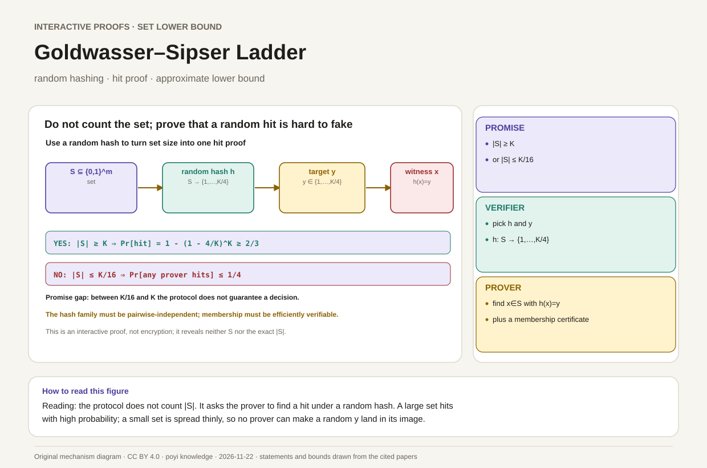
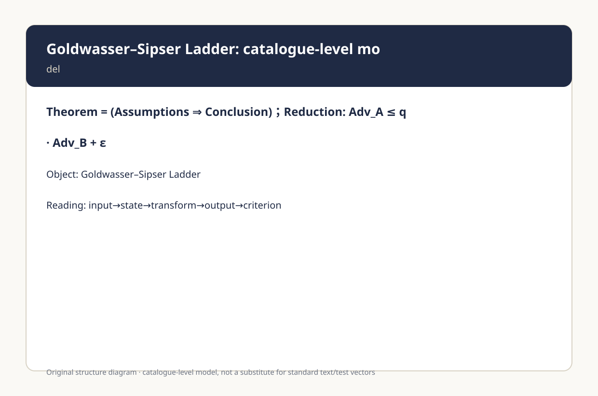

Principles
Theorem: Goldwasser-Sipser Ladder (Goldwasser-Sipser 层次化方法). ### The promise problem of a set lower bound
Let S ⊆ {0,1}^m be a set whose membership can be efficiently certified. The verifier knows a parameter K and must distinguish two cases: |S| ≥ K (YES) and |S| ≤ K/16 (NO). The protocol does not count |S|; it uses a random hash to make the prover demonstrate that the set is large enough. The catalog labels this entry “ladder”; here we unfold its executable mechanism, the Goldwasser–Sipser set lower bound protocol. ### A one-round public-coin protocol
The verifier selects h: {0,1}^m → {1,…,K/4} from a pairwise-independent hash family H_{m,k}, samples y uniformly from the same range, and sends (h,y) to the prover. The prover finds x∈S with h(x)=y and attaches a certificate that x∈S; the verifier checks the certificate and the hash hit. ### Completeness and soundness
If |S| ≥ K, the probability that a random y is hit by S is
1 - (1 - 4/K)^K ≥ 2/3. If |S| ≤ K/16, then h(S) covers at most (K/16)/(K/4) = 1/4 of the hash range, so no prover can make a random y hit with probability above 1/4. The protocol is therefore a public-coin approximate lower bound: it does not give the exact |S|, only a 2/3 versus 1/4 gap between “large enough” and “much smaller”.

Why it matters
Computing |S| exactly can be #P-hard, but many protocols only need to distinguish “large enough” from “half as large”. A hash hit turns a cardinality comparison into one membership proof, and the verifier need not enumerate S.
Arora and Barak’s textbook simplifies the original lemma to one hash, one random y and a K/16 promise gap: the hash range is K/4, a large set is hit with probability at least 2/3, and a small set lets no prover succeed with probability above 1/4. The original paper instead used l random linear hashes and l² target strings to amplify the hit probability and prove IP[k] ⊆ AM[k+2].
The set lower bound protocol is not an encryption scheme, but it demonstrates the pattern of compressing cardinality information with random hashing; membership proofs, approximate counting and private set intersection use related hash/commitment structures.
Applications
- Both parties agree on K and the hash range R = K/4; the verifier selects a pairwise-independent h and a random y. 2. The prover finds x∈S with h(x)=y and supplies a membership certificate. 3. The verifier checks the certificate and the hit; acceptance means S is very likely ≥ K. 4. For higher confidence, repeat independently; the error decreases exponentially with the number of rounds. 5. Record the hash family, range, repetition count and the membership-certificate check.
The AM protocol for GNI, simulations of IP=AM, approximate counting, set-size lower bounds, and the teaching and design of interactive proofs.

Limits & attacks
- No K/16 promise gap: if |S| lies between K/16 and K, the protocol does not guarantee a correct decision. 2. Membership is not efficiently certifiable: the prover cannot supply a certificate for x∈S. 3. The hash family is not pairwise-independent, or its randomness is predictable: the completeness/soundness proof fails. 4. The verifier reuses the same y or h: the prover can precompute a hit. 5. The prover is unbounded but the verifier implementation is flawed: the protocol proves an interactive proof, not implementation security. 6. Reading “the set is large” as “the set contents are known”: the protocol does not reveal the elements of S.
The GS protocol is an interactive proof, not encryption or a signature; it provides no zero knowledge and does not prove the exact value of |S|. The constants 2/3 and 1/4 are common parameters, not the only choice.
History
In their STOC 1986 paper, Goldwasser and Sipser proved that private-coin interactive proofs and public-coin Arthur–Merlin proofs recognise the same languages. The key tool was the approximate lower bound lemma: Carter–Wegman universal hashing turns a lower bound on set size into a hit probability.
The original paper used l random linear hashes and l² target strings to amplify the hit probability, obtaining IP[k] ⊆ AM[k+2]. Later textbooks simplified it to one hash, one random y and a K/16 gap, producing today’s common set lower bound protocol.
The set lower bound protocol remains a basic component of interactive proofs and counting complexity; in cryptography it is more a methodology for compressing cardinality information with random hashing than a directly deployed protocol.
Worked example & verification
Formal model and reproduction steps
[\Pr[\mathrm{Bad}_A(\lambda)]\le \varepsilon(\lambda)]
Goldwasser-Sipser Ladder: the registered public parameters, key material or randomness, and message are mapped through the stated transformation to an output checked against the registered criterion. The worked example is a structural reproduction, not a new test vector; parameter ranges, standard versions and implementation details remain source-bound.
References
- Wikipedia search entry for Goldwasser-Sipser 层次化方法. https://zh.wikipedia.org/w/index.php?search=Goldwasser-Sipser%20%E5%B1%82%E6%AC%A1%E5%8C%96%E6%96%B9%E6%B3%95
- Handbook of Applied Cryptography (Menezes, van Oorschot, Vanstone). https://www.cacr.math.uwaterloo.ca/hac/